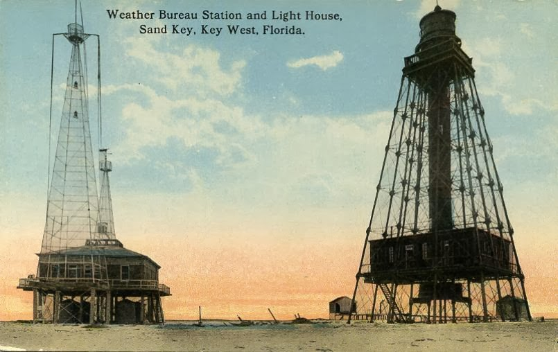
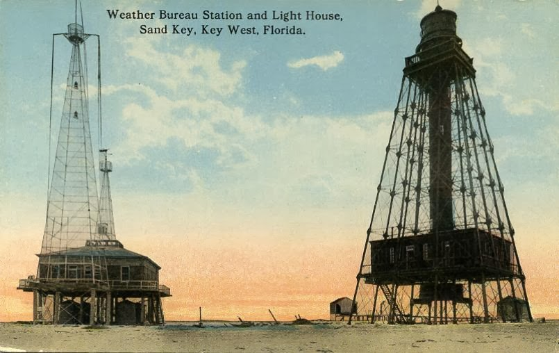

ELS PRIMERS ANYS DEL FAR DE BUDA

Fons Salvany.
Biblioteca de Catalunya
Fons Salvany.
Biblioteca de Catalunya
El Far de Buda entra en funcionament just el dia 1 de novembre de 1864, després de més de dos anys i mig de muntatge de l’estructura de ferro i de la llanterna i aparell, realitzats també per una empresa anglesa, Chance Brothers, experta en llums de fars per a tot el món. L’anunci d’Hidrografia ho publicava als principals diaris econòmics de l’època.

Anunci de la posada en funcionament del far de Buda, publicat als principals diaris de l’època
El Far de Buda entra en funcionament just el dia 1 de novembre de 1864, després de més de dos anys i mig de muntatge de l’estructura de ferro i de la llanterna i aparell, realitzats també per una empresa anglesa, Chance Brothers, experta en llums de fars per a tot el món. L’anunci d’Hidrografia ho publicava als principals diaris econòmics de l’època.

 

El Far de Buda era una gran torre de ferro de forma cilíndrica que anava minvant de diàmetre de baix a dalt, pintada de color gris perla, i amb els tirants de color plom fosc. 365 graons formaven una escala de cargol que anava per dins del tub central fins a la llanterna. Va ser construït amb ferro forjat anglès de qualitat superior, per a les estaques, armadures, biguetes i la resta d'elements metàl·lics, i alguns elements fets amb ferro fos, de la mateixa procedència, per a determinades peces molt concretes.
Amb l’ús de ferro forjat com a material que suportava millor les vibracions del terreny que els pilars de ferro fos, tot un entramat de muntants, tirants i altres peces rígides com els trapezis que suportaven cada pis, aixecaven l’obra a la perfecció
Extracte de la revista de Obras Públicas de l’any 1861 on Lucio del Valle publica diverses il·lustracions sobre els fars de l’Ebre
El disseny del gran Far aplicava l’ús de les rosques Mitchell, puntals necessaris per al lloc on havia d’anar instal·lat, un terreny deltaic format per sorres i llims. Aquest nova tècnica, inventada per Mr. Mitchell, tenia el gran avantatge d’oferir una gran resistència a les presions, tant superiors com inferiors. Es podien utilitzar en tota clase de terrenys, especialment en els de sorres, llims i argilles, només s’adaptava modificant la forma del cargol a la base on s’instal·lava.